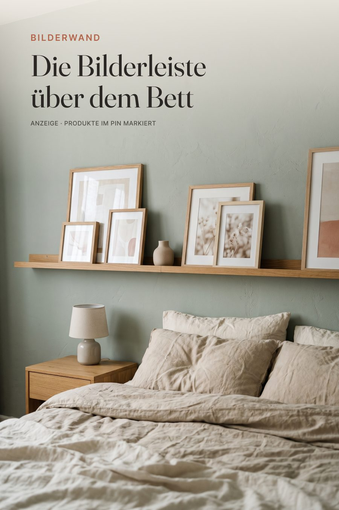

Bilderwand · Look zum Nachshoppen
Die Bilderleiste über dem Bett
Bilderleiste aus Holz über dem Bett mit angelehnten Rahmen, Vase und Nachttischlampe. Bilderwand-Ideen fürs Schlafzimmer, ganz ohne Nagelchaos.

KI-generiertes Stimmungsbild – die Produkte unten sind passende Alternativen.
Shop the LookDie Produkte zum Look
Mit * markierte Links sind Affiliate-Links zu Amazon.
- Bei Amazon ansehen*Bilderleiste Eiche, ca. 100–120 cmGieanoo Bilderleiste 100 cm, Eiche massiv
Alternative: levandeo Bilderleiste Eiche, 110 cm, MDF* - Bei Amazon ansehen*Bilderrahmen-Set Eiche und Schwarzbomoe 18er Bilderrahmen-Set, Holz
Alternative: PHOTOLINI Bilderrahmen-Set, Echtholz* - Bei Amazon ansehen*Kunstdrucke abstrakt/botanisch, ruhige Farben, Setag.art deco 3er Poster-Set ohne Rahmen
Alternative: Hambient Poster-Set Wohnzimmer/Schlafzimmer* - Bei Amazon ansehen*Kleine KeramikvaseKeramikvase minimalistisch, Boho, Beige, klein
Alternative: Keramikvase klein für Pampasgras* - Bei Amazon ansehen*Nachttischlampe mit LeinenschirmLIANTRAL Nachttischlampen 2er-Set mit Leinen-Lampenschirm
Alternative: Aigostar Keramik-Tischleuchte mit Stoffschirm, Creme* - Bei Amazon ansehen*Bettwäsche Leinen Sand oder SalbeiLeinen-Bettwäsche-Set 100% Leinen, stonewashed, Naturfarben
Alternative: SOULFUL Bettwäsche 135x200, Baumwolle, Salbei*